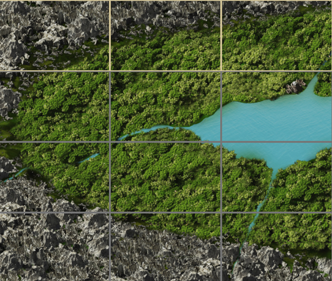
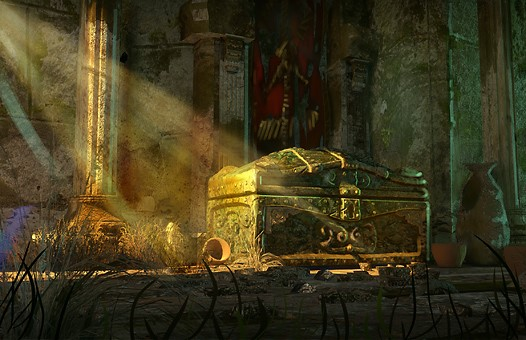
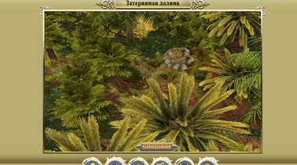
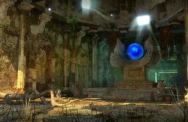

Затерянная долина – уникальная локация для высокоуровневых персонажей, которая открывает возможность добывать остывший вулканит для бесплатной починки вещей в любой точке игрового мира, а также для восстановления максимальной прочности комплектов Воина крови и Магистра (восстанавливаются в Кузнице древнего пламени с потерей всех модификаций). Что бы открыть дверь в долину необходимо добыть рунный ключ, который находится на 40 этаже шпиля черной башни.
Описание локации
- Чтобы попасть в Затерянную долину, нужно пройти Шпиль чёрной башни, добыть рунный ключ. После чего отправиться в Подземелье гномов (159, 54) и пройти комнаты в определенном порядке (1-2-3-5-9). В самом низу комнаты №9 находится дверь в долину, открыть которую можно только с помощью рунного ключа.
- В комнате №5 можно нажать кнопку, открывающую решетку к сундуку с чертежами оружия для сетов Воина крови и Магистра.
- При входе оказываемся на координатах (161, 31), в первой локации нельзя найти на земле остывший вулканит и монстры нападают слабее, чем в других областях долины.
- Кристаллы спасения работают в Затерянной долине.
- Есть возможность вмешиваться друг к другу и перемещаться в составе отряда.
- В случае проигрыша оказываетесь на Центральной площади.
- Остывший вулканит выпадает только в лесной зоне (при исследовании клетки). Шанс выпадения остывшего вулканита – 7%.
- Из 50 остывших вулканитов можно сделать 1 пылающий (ремонтирует 1 предмет без уменьшения максимальной поломки, пылающий вулканит плавится в Кузне древнего пламени).
- Состав монстров в локации:
- Рапторы,
- Тираннозавры,
- Тираннозавры альфа,
- Горные грифоны,
- Бритволистые ядострелы,
- Арканитовые саламандры,
- Ферритовые саламандры
Что можно найти на территории Затерянной долины
- В сундуке на координатах (170, 16) – Заклинание призыв ангела-хранителя, заклинание великое помешательство и 2 пылающих вулканита.

- (122, 25) – случайная руна 2 типа.
- (113, 9) – случайная руна 2 типа.
- (121, 0) – случайная руна 2 типа.
- (141, -8) – случайная руна 3 типа.
- (156, -12) – янтарный уголь (нужен для увеличения количества предметов при плаве в Кузнице древнего пламени)
- (173, -16) – случайная руна 3 типа.
- (176, 2) – гнездо, при исследовании нападают усиленные монстры (нападение происходит без отряда, но в этот бой вмешиваться разрешено). После победы, исследуем гнездо и находим Яйцо раптора.

Загадочный портал (172, 17), который рассказывает о 4 главе сюжетной линии игры.

Заключение и рекомендации
Достаточно интересная локация с возможностью добычи остывшего вулканита.
- Желательно собирать в Затерянную долину подходящий для быстрого фарма вулканита отряд, включающий хорошего танка, стихийного мага (для пепельных торнадо), отравителя (против крупных динозавров), светлого мага
- Рекомендуется взять с собой побольше кристаллов спасения и других расходников, чтобы успеть собрать достаточное количество вулканита, прежде чем потребуется вернуться в город. За пару недель фарма Затерянной долины можно обеспечить себя вулканитом на пару лет вперед.
- Рекомендуется прохождение отрядом на скорости х0.5 – почти все монстры в долине имеют малое ОД на действие и могут убить зазевавшегося мага за пару секунд.
- Не стоит ходить по речной местности при фарме вулканита – там выпадают только кувшинки.
- Иногда на речной местности долины появляются странствующие торговцы. Что они там делают и как туда попали – загадка.
Автор статьи – Eradicator